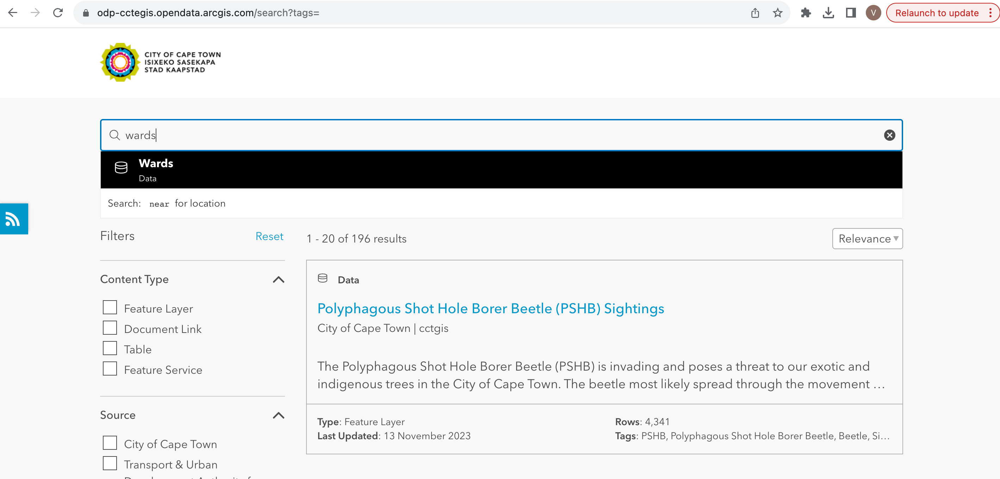
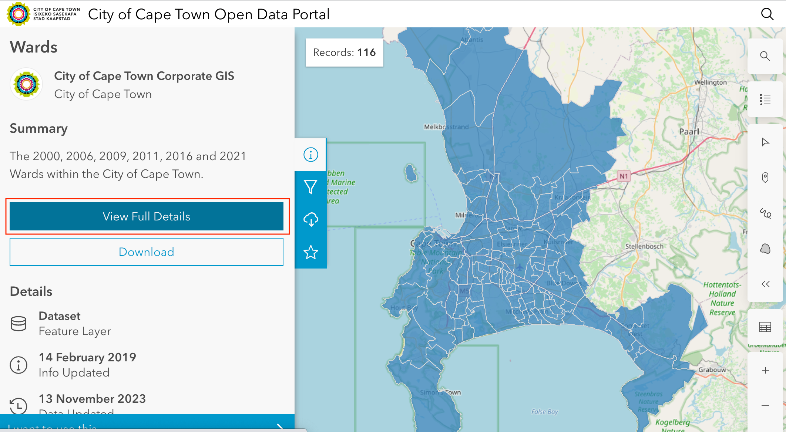
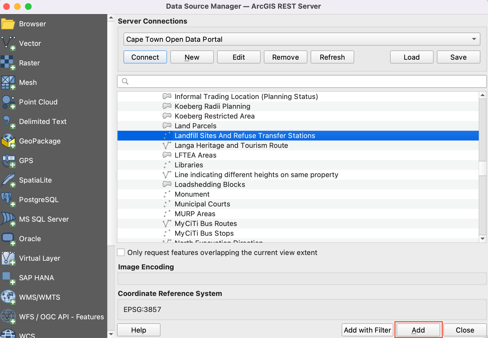
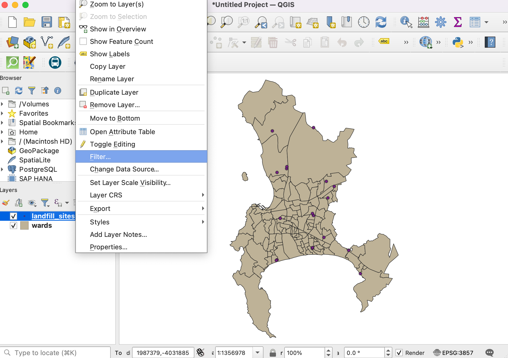
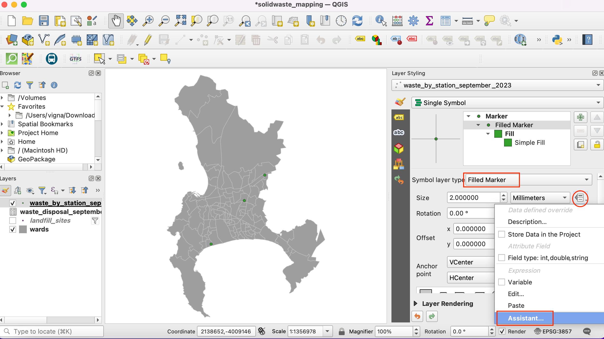
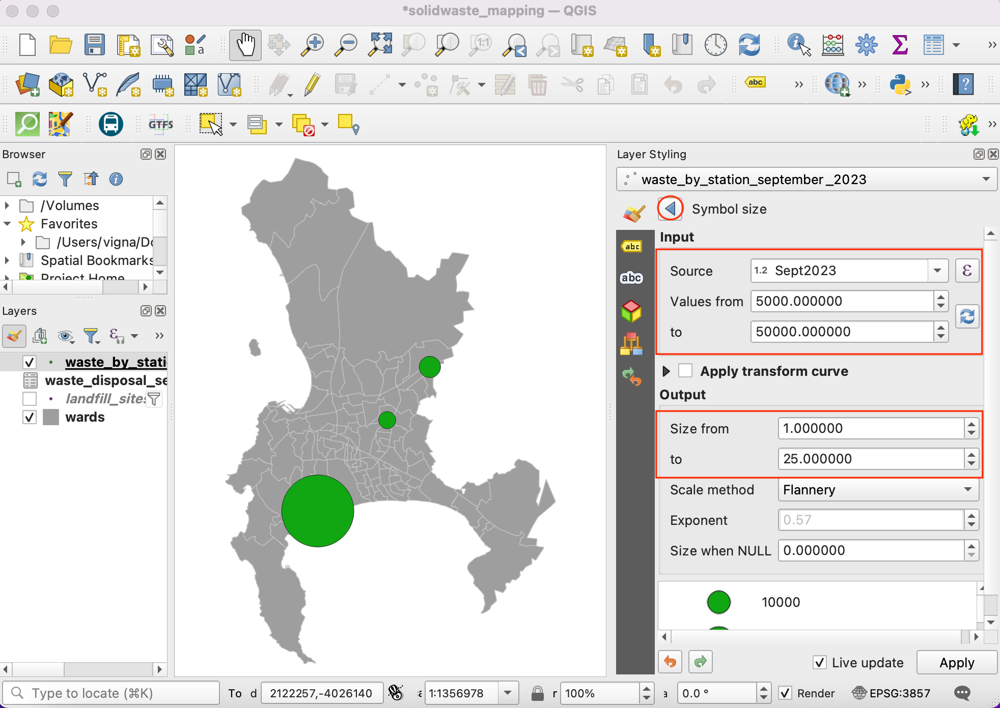
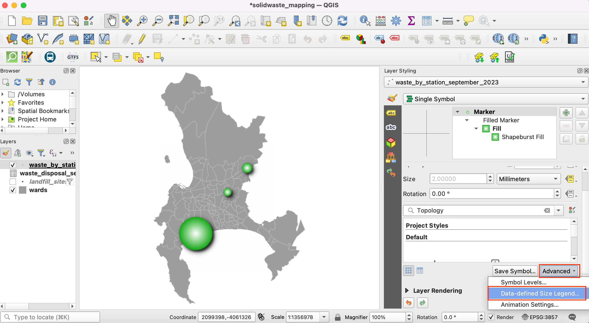

Ujaval Gandhi
Ujaval GandhiCartografía de los volúmenes de eliminación de residuos (QGIS3)¶
Este tutorial está diseñado para ayudarle a descubrir nuevas técnicas cartográficas y herramientas cartográficas disponibles en QGIS.
Visión general de la tarea¶
Aprenderá a tomar datos puntuales de vertederos y a crear un mapa de símbolos proporcionales que muestre la cantidad de residuos procesados en cada vertedero.

Otras competencias que aprenderá¶
Importación de datos del servidor ArcGIS en QGIS mediante URL REST.
Importación de datos tabulares de hojas de cálculo en QGIS.
Obtener los datos¶
Puede encontrar los datos para el tutorial en el Portal de Datos Abiertos de Ciudad del Cabo - https://odp-cctegis.opendata.arcgis.com. Importaremos los datos del portal mediante el servicio REST de ArcGIS Online y prepararemos las tres capas que se mencionan a continuación.
Wards: Un archivo shape poligonal con los límites de los distritos de Ciudad del Cabo.
Landfill Sites: Un archivo shape de puntos con las instalaciones de tratamiento de residuos actuales, cerradas y propuestas en Ciudad del Cabo.
Waste Disposal Data: Una hoja de cálculo con la cantidad de residuos que entran en las instalaciones de eliminación de la Ciudad.
Veamos paso a paso cómo preparar el conjunto de datos para este tutorial.
Vaya al Portal de Datos - https://odp-cctegis.opendata.arcgis.com/search?tags=. Buscaremos los datos de
Wardsen la barra de búsqueda y haremos clic para seguir navegando.Haga clic en Ver todos los detalles para explorar los servicios disponibles para obtener los datos.
Desplácese hacia abajo hasta encontrar Ver fuente de datos abierta y haga clic en ella.

En el directorio de servicios REST de ArcGIS, vaya a Inicio y copie la URL de esa página. El copiado se parece a - https://citymaps.capetown.gov.za/agsext1/rest/services.

Ahora, abra QGIS y vaya a .

La lista de fuentes de datos se ve en el panel izquierdo. Desplácese hacia abajo hasta encontrar . Haga clic en nuevo para crear una nueva conexión al servidor.

En Detalles de conexión, indique el Nombre
Portal de Datos Abiertos de Ciudad del Caboy pegue la url copiada como entrada para URL.
Haga clic en Aceptar y, a continuación, en Conectar para ver las carpetas de datos disponibles en el servidor.

Ahora buscaremos en la base de datos las tres capas necesarias para el tutorial. En primer lugar, abriremos la capa
Wardsen QGIS. Despliegue las carpetas para buscar las capas. La ruta completa a la capa es - . Seleccione la capa y haga clic en Añadir.
Vamos a abrir
Landfill sitesen QGIS. La ruta completa a la capa es . Seleccione la capa y haga clic en Añadir.Ahora buscaremos la hoja de cálculo
Waste Disposalen el portal de datos. Haga clic en el enlace de datosWaste Disposalpara descargar el archivo.
El archivo llamado
Waste Disposal September 2023.odsse descargará después de hacer clic en el enlace. Abra el archivo. El archivo contiene 3 hojas de las cuales utilizaremos los datos deDisposal_per_Sitepara el tutorial.
Mantendremos sólo el total de vertidos por centro. Añade una nueva hoja con el nombre
Disposal_per_Site_editedy copia los datos de la hojaDisposal_per_Site. Edite los nombres de los emplazamientos eliminando los corchetes para que coincidan con los atributos de los datos deLandfill sites. Los valores tienen formato numérico, cámbielos a decimales simples. Guárdelo comowaste_disposal_september2023.odsen una carpeta de datos para este tutorial.
Observa que hay 3 sitios diferentes para
Bellvilley el valor de eliminación es cero para dos de ellos. Vamos a combinarlo para mantener el único sitioBellvillecon el valorno-cero.
Cambiar a QGIS. Ya hemos importado los archivos shape desde el servidor ArcGIS. Vamos a guardarlo en la carpeta de datos locales para este tutorial. Haga clic con el botón derecho en la capa
Landfill Sites And Refuse Transfer Stations. Vaya a .En el cuadro de diálogo Guardar capa vectorial como, vaya a la carpeta de datos y guarde el archivo shape como
landfill_sites.shp. Haga clic en Aceptar.
Del mismo modo, guarde la capa
wardcomowards.shpen la carpeta de datos. Ahora hemos preparado la carpeta de datos con las tres capas y listo para comenzar con el procedimiento.
Para mayor comodidad, puede descargar directamente una copia de estos archivos a continuación:
Procedimiento¶
Abra QGIS. Haga clic en el icono para añadir la capa.

Cambie a la pestaña Vector, vaya a la carpeta de datos y seleccione los archivos
wards.shpylandfill_sites.shp. Haga clic en Añadir.
Abra la tabla de atributos de la capa
landfill_sites. Esta capa contiene todos los vertederos de residuos sólidos de Ciudad del Cabo. Puede ver que el atributoSTATUScontiene si las instalaciones están operativas o no. Podemos utilizar los valores de esta columna para seleccionar sólo las instalaciones Actuales.
Haga clic con el botón derecho del ratón en la capa
landfill_sitesy seleccione Filtro`.
5. In the Query Builder, enter the following expression and click OK.
"STATUS" = 'Current'

Una vez aplicado el filtro, sólo un subconjunto de puntos será visible en el mapa. A continuación añadiremos el fichero
waste_disposal_september2023.ods. Haga clic en el icono y cambie a la pestaña :guilabel: Vector. Navegue por el archivo haciendo clic en el botón … que aparece junto a Nombre de archivo. Haga clic en Añadir.
En el cuadro de diálogo Seleccionar elementos para añadir, seleccione el elemento
Disposal_per_Site_editedy haga clic en Añadir capas.
Abra la tabla de atributos de la capa
waste_disposal_september2023. Esta tabla contiene el nombre de la instalación y el total de residuos recogidos en el centro durante el mes de septiembre de 2023.
Vamos a unir esta tabla con la capa de puntos
landfill_sites. Vaya a de la barra de menús.
Busque y localice la herramienta Unir atributos por valor de campo de la caja de herramientas. Haga doble clic para abrirla.

11. In the Join Attributes by Field Value dialog, select landfill_sites as the Input layer and NAME as the Table field. Select waste_disposal_september2023 as the Input layer 2 and Disposal Site as the Table field 2.
Check the Discard records which could not be joined box. Save the Joined layer by clicking on … button and select Save to File.

Nombre la capa de salida como
waste_by_station_september_2023.shpy haga clic en :guilabel:”Ejecutar”.

Una vez finalizado el procesamiento, se añadirá una nueva capa
waste_by_station_september_2023que tendrá la cantidad de residuos en la columnaSept2023.

Ahora vamos a visualizar estos datos. En primer lugar, seleccione la capa
Wardsy haga clic en el icono .

Establece la simbología de esta capa en Simbolo único con un Color de relleno y Color de trazo claros.

A continuación, seleccione la capa
waste_by_station_september_2023y seleccione el símbolo :guilabel:”Marcador simple”. Haga clic en el desplegable de Tipo de capa de símbolo.

Seleccione
Marcador de rellenocomo Tipo de capa de símbolo`. Ahora cambiaremos el tamaño del símbolo proporcionalmente a la cantidad de residuos recogidos en el lugar. Para ello, debemos aplicar una Anulación definida por datos, que puede aplicar un valor de campo o una expresión para calcular el tamaño de cada objeto espacial. Haga clic en el botón Supresión definida por datos situado junto a Tamaño y seleccione Asistente.

Queremos dimensionar los símbolos rellenados en función de los valores de los residuos recogidos. Seleccione el campo
Sept2023como Fuente. Establecer valores de5000a50000. Ahora establezca el tamaño del círculo de1a25. Haga clic en el icono Atrás.

Verá los círculos de diferente tamaño para cada punto. Los tamaños están en milímetros. El botón de anulación de datos definidos se volverá amarillo para indicar que se ha aplicado una anulación a ese valor.

Exploremos opciones de estilo más avanzadas. Cambie el tipo de capa Símbolo a Relleno de degradado. Seleccione 2 colores de su elección para representar los círculos con un relleno degradado.

21.A continuación aplicaremos un efecto Sombra paralela a los círculos para resaltarlos en el mapa. Esto se conoce como Efectos de capa en vivo. Desplácese hacia abajo y expanda la sección Renderizado de capas. Marque el botón :guilabel: Efectos de dibujo y haga clic en el botón de la estrella.

Activa la opción Sombra paralela.

El mapa tiene ahora muy buen aspecto, pero el lector necesita saber qué valores representan estos símbolos. Será bueno tener una leyenda interpretable. Pulse el botón Atrás hasta volver al diálogo principal de Estilos de Capa. Seleccione Marcador y haga clic en el botón Avanzado de la parte inferior. Seleccione Leyenda de tamaño definida por datos.

Introduzca
Residuos Recogidos (Toneladas)como :guilabel: Título y haga clic en el botón :guilabel: + para añadir entradas de leyenda. Como nuestros símbolos están escalados por un factor de 3, introduzca el valor y la etiqueta adecuados. Verá que ahora aparece una bonita leyenda en el panel Capas. La misma leyenda estará disponible enComposición de impresiónsi desea crear un mapa a partir de estos datos.

Cierre el panel Estilos de capa. La visualización está lista. Ha aprendido a convertir los datos de una tabla en un mapa visualmente informativo y atractivo.

If you want to give feedback or share your experience with this tutorial, please comment below. (requires GitHub account)